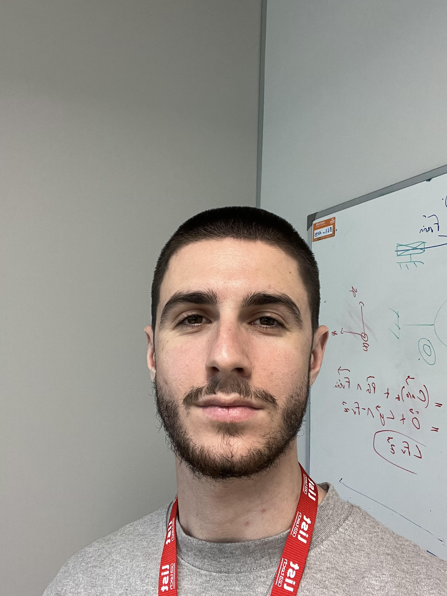
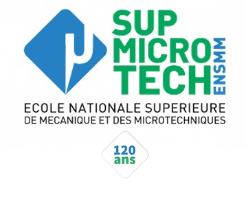
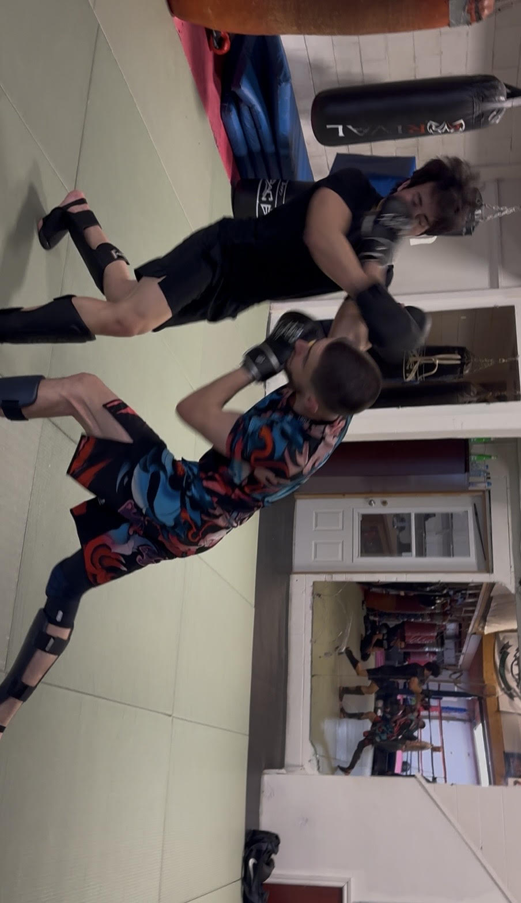

En dernière année d'ingénierie à l'ENSMM. Spécialisé en robotique parallèle, mécanismes compliants et prototypage avancé. Animé par la volonté de concevoir des systèmes mécaniques intelligents, fiables et élégants pour des secteurs d'excellence (Médical, Aérospatial, Robotique de pointe).
Développer de A à Z un robot parallèle (4-DOF) à architecture reconfigurable intégrant un effecteur capable de s'adapter à n'importe quelle forme d'objet via un pilotage purement mécanique.
Un prototype fonctionnel imprimé en 3D (Poudre SLS), validant l'intégration de la compliance pour des opérations de Pick & Place avancées.
Lire l'étude de cas complète ➔Concevoir un système IoT totalement autonome capable de détecter les vols de câbles sur les réseaux électriques et d'émettre une alerte longue distance, le tout dans un environnement extérieur hostile.
Un prototype fonctionnel, étanche et communicant, validant l'approche technologique de la détection autonome.
Lire l'étude de cas complète ➔Dans le cadre du projet européen TraceBot, reconcevoir un doigt robotique actionné par câble pour réduire son inertie, simplifier son assemblage et conserver une "transparence mécanique" parfaite (10N de force).
Une articulation compliante validée expérimentalement à plus de 100 000 cycles de flexion, avec une architecture drastiquement épurée.
Lire l'étude de cas complète ➔Sur une ligne de production automobile à haute cadence, un bras robotisé 6 axes souffrait d'un fort taux d'échec lors du clippage d'agrafes plastiques. Objectif : éradiquer les défauts sans arrêter la production.
Chute drastique des erreurs de placement. Récompensé par le prix de "L'Idée d'Amélioration du Mois" par la direction de l'usine.
Lire l'étude de cas complète ➔
Diplôme d'Ingénieur (Grade Master) - 2026
Programme d'excellence en mécanique, systèmes mécatroniques et microsystèmes. Formation axée sur les projets multidisciplinaires et l'innovation industrielle.
Spécialisation CROC (Conception et Réalisation d'Objets Connectés) :
